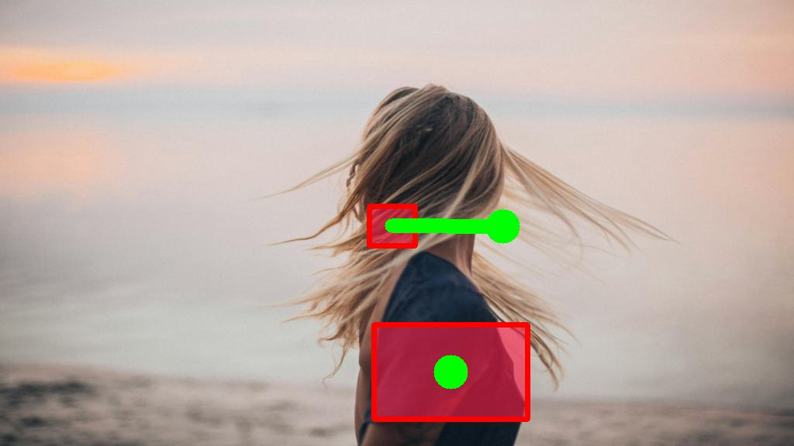
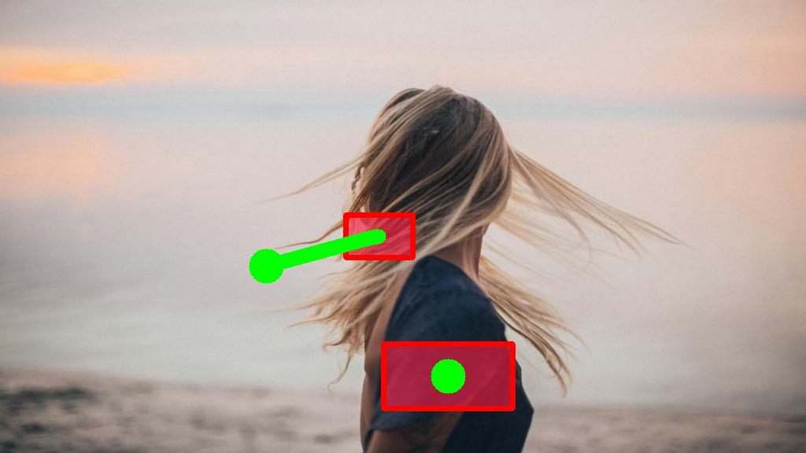
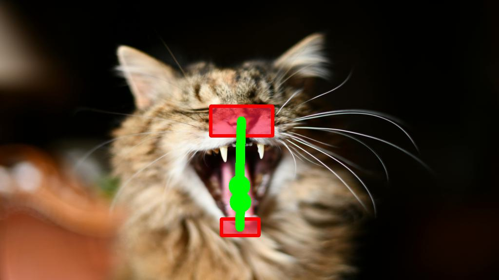

Qualitative Results: Object Motion Control






Methods for image-to-video generation have achieved impressive, photo-realistic quality. However, adjusting specific elements in generated videos, such as object motion or camera movement, is often a tedious process of trial and error, e.g., involving re-generating videos with different random seeds. Recent techniques address this issue by fine-tuning a pre-trained model to follow conditioning signals, such as bounding boxes or point trajectories. Yet, this fine-tuning procedure can be computationally expensive, and it requires datasets with annotated object motion, which can be difficult to procure. In this work, we introduce SG-I2V, a framework for controllable image-to-video generation that is self-guided—offering zero-shot control by relying solely on the knowledge present in a pre-trained image-to-video diffusion model without the need for fine-tuning or external knowledge. Our zero-shot method outperforms unsupervised baselines while being competitive with supervised models in terms of visual quality and motion fidelity.
In this work, we control the motion in generated videos by specifying bounding boxes and their associated trajectories. Our framework is built on Stable Video Diffusion, a publicly available image-to-video diffusion model.
To control trajectories of scene elements during the denoising process, we optimize latent $z_t$ at specific timesteps $t$ as follows:
(1) We extract semantically aligned feature maps from the denoising U-Net, where regions belonging to the same objects across frames have similar feature vectors.
(2) We optimize the latent $z_t^*$ with a loss that encourages cross-frame feature similarity along the input trajectory.
(3) To preserve the visual quality of the generated video, a frequency-based post-processing method is applied to retain high-frequency noise of the original latent $z_t$. The updated latent $\tilde{z}_t$ is input to the next denoising step.
While our method is tuning-free (i.e. no fine-tuning on annotated data), it demonstrates competitive performance with supervised baselines in visual and motion quality.
Input Trajectory
Ours
DragNUWA
DragAnything

We find that diffusion features in video diffusion models are weakly semantically aligned, where regions belonging to the same objects across frames have inconsistent feature vectors.
To address this issue, we modify the computation of spatial self-attention layers by replacing key and value tokens of each frame with those of the first frame.
As demonstrated below, this modification successfully produces feature maps clearly semantically aligned across frames.
Generated Video
Up-Block output
Self-Attention
Modified Self (Ours)
To demonstrate the effectivness of utilizing modified self-attention feature maps for the optimization, we compare against videos generated with naively extracted feature maps:
Input Trajectory
Modified self-attn out
(Our choice)
Self-attn out
Upsample block out

As demonstrated above, applying naively extracted feature maps for the optimization fails to follow the trajectory due to the weak semantic
alignment across frames.
In contrast, performing optimization with our modified self-attention layers can produce videos consistent with the input trajectory, highliting the importance of using
semantically aligned feature maps.
Naively optimized latent may disrupt the distribution of high-frequency noise expected by the diffusion model, which results in generateing oversmoothed videos with artifacts. As demonstrated below, our high-frequency preserved post-processing recovers video quality while maintaining motion fidelity.
Input Trajectory
w/o post-processing
w/ post-processing (Our choice)
Here, we study the effect of extracting feature maps from various resolution levels of the upward path. We observe that feature maps extracted from the middle layers can produce the most plausible videos consistent with the input trajectory. In this work, we choose the last two middle layers for optimization.
Input Trajectory
Bottom 2
Mid 2
Top 1
Here, we study the effect of optimizing latent at individual denoising timesteps. Performing optimization at later stage of denoising steps (e.g. $t=10, 20$) severely introduces artifacts in the generated videos, while early denoising steps (e.g. $t=50$) have weak motion control. Based on this observation, we perform latent optimization at timesteps $[30, 45]$.
Input Trajectory
Timestep 50
Timestep 40
Timestep 30
Timestep 20
Timestep 10
@article{TBA,
author = {Namekata, Koichi and Bahmani, Sherwin and Wu, Ziyi and Kant, Yash and Gilitschenski, Igor and Lindell, David B.},
title = {SG-I2V: Self-Guided Trajectory Control in Image-to-Video Generation},
journal = {arXiv preprint arXiv: TBA},
year = {2024},
}